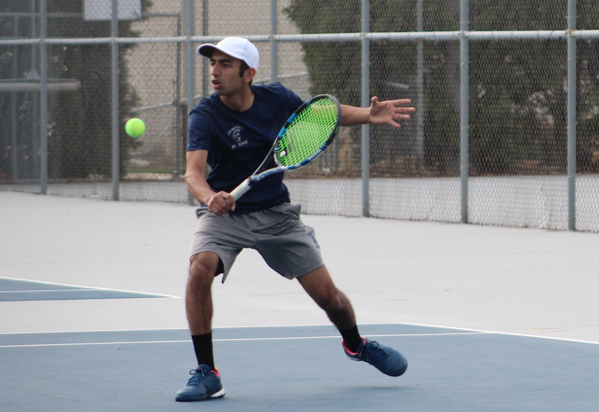
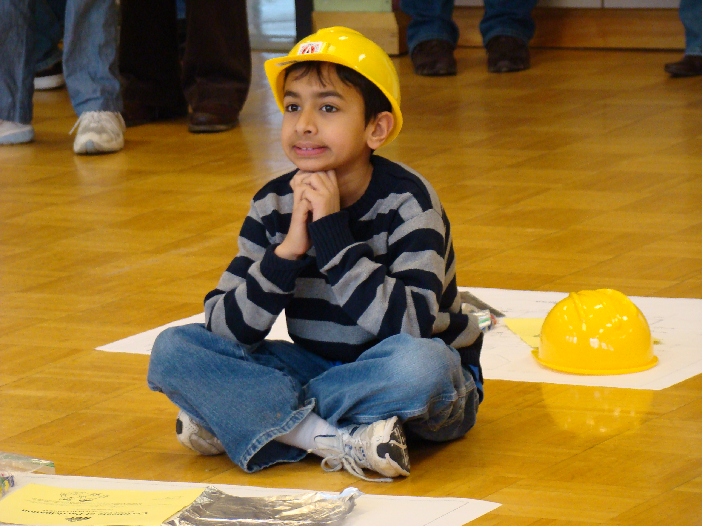
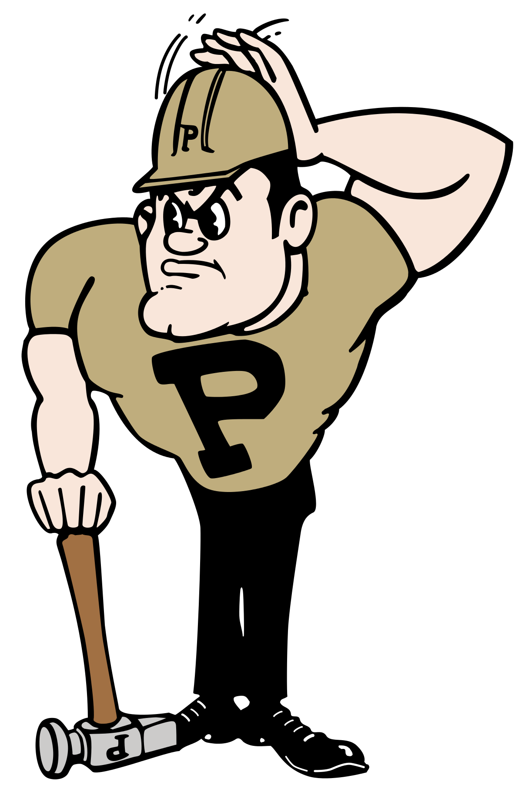

| Home | Bio | Projects | Goals |
|

|

|

|

|
Aditya Subramaniam
I was born in 1999 in Ann Arbor, Michigan. From a young age, I always enjoyed building things. Whether it was a popsicle stick bridge or a pinewood derby car, I was ready to take on any building challenge.

This passion of mine started when I joined my elementary school's cub scouts troop at three years old. In cub scouts, we had numerous racing competitions, which included the pinewood derby, space derby, and boat derby competitions. In the pinewood derby competition, we got a block of wood, four standard wheels, and four nails, and he had to design and create a fast car to compete in a race against everyone else's cars. The space derby and boat derby were the same idea but required the design of a rocket and boat instead. In my first pinewood derby competition, I barely missed the top three by half a second. After walking out of the competition without a trophy that day, I was sad, wishing I would have finished in the top three. However, coming up short motivated me to stick with it and come back strong next time. The following year, I got second. The following three years, I won first place three times in a row. This experience with the pinewood derby allowed me to get my feet wet with engineering, and I continued to participate in competitions like these in my childhood.
Along with building things, I also took interest in sports from a young age. When I was four, I started playing baseball. After a year, I found out that I was really it, and I continued to play it every summer. Baseball not only became a great hobby that I really enjoyed, but it also became a fantastic way for me to meet new friends and make connections. My friends got me so hooked onto baseball that I started following the Detroit Tigers, the MLB team from Detroit.
In 2008, we moved to Bettendorf, Iowa as a family. At first, I was really scared about transitioning from a big city life to a small, midwestern town. I missed lots of things about Detroit, but I also found many new opportunities in Iowa. I still took part in Cub Scouts and Pinewood Derby competitions, and I still continued to follow the Tigers and play baseball. When I turned eight years old, I decided that I also wanted to try tennis. After a few weeks, I really began to love the sport and followed it on a regular basis as well. I started to idolize Roger Federer and made an active effort to play in my free time. By the time I got to high school, I joined our local tennis club and started playing tennis year round. The effort definitely paid off in the end as I earned three varsity letters in high school for tennis. During my senior year, I even made it to the state singles tournament, and our team got fourth place in the team state competition. Even though my competitive career ended after high school, I still love playing tennis in my free time.
Even as I had a passion for sports, my interest in engineering and design grew. I continued to participate in Pinewood Derby competitions, and I took a few engineering courses in middle school. I also joined my school's robotics team in sixth grade. After participating in robotics and taking these engineering courses, I was certain that my career interest would be in a STEM field. Which STEM field it would be was still uncertain but having done robotics and learning how to solve problems in a team sparked my interest. The next biggest factor which caught my interest in STEM was math. Throughout elementary and middle school, I liked math, but I never really took excitement in it until I got to high school. When I got to ninth grade, I took a geometry course which started my passion for math. This class was one of the most challenging that I took in high school, but it definitely pushed me to expand my problem solving skills and think in ways I've never thought before. The passion I got from this class sparked my interest in a math based career, and it pushed me to take interest and enjoy learning math for the rest of my high school and college careers.

As I continued participating in robotics throughout high school, I got to my junior year and still hadn't figured out which STEM field I wanted to pursue a career in. That year, I decided to try out as the programmer on our high school team. Initially, I found programming really difficult and didn't know how to start, but eventually I got a hang of it and really started to enjoy it as well. Along with that, my father one day gave me two articles to read about machine learning and artificial intelligence. After reading these articles and seeing how much the computer science field has been exploding, I started to follow the news on it more and more. Slowly, I started to develop more interest and decided that with my passion for STEM and math, computer science would be a great career choice for me.
As I decided that I would pursue a career in computer science, my next step was picking a college where I would pursue that dream. After looking at some schools and doing research, I took a visit to Purdue. After my tour there, I knew right away that Purdue was where my next home would be. The beautiful campus, student culture, friendly and gentle faculty, and the diverse student body all made me realize that Purdue was where I was meant to be. Coming into the first semester, however, I was really nervous about how I would perform. I came into college with much less programming experience than most of the students in CS. Because of the learning curve, the first few weeks of the first course were a real challenge for me. I was often the last one out of labs and struggled to figure out the homework assignments which everyone else found easy. I got really discouraged by this and began to wonder whether computer science was really meant for me. Due to my struggles, I reached out to my TA to ask if he had any advice on how I should work through the course and how to develop better study habits. My TA was really happy to help me and assured me that I would eventually get the hang of it. Thankfully, I stuck with it and worked really hard to understand java as well as I could. By the end of the semester, I ended up loving programming so much that I couldn't wait to go home so I could learn other programming languages as well.
After how much I learned in my first year at Purdue, I started to develop a strong passion for computer science. Along with playing tennis and watching sports in my free time, I started to learn more languages and work on programming projects on my own as well. Currently, I am working as a backend software engineering intern at John Deere in Moline, Illinois. In my job, I work on building APIs and testing software with the agile software development lifecycle. Heading into my sophomore year this fall, I look forward to see what my future holds.
|
|
Subpages | Social Media | Other Sites | Contact Me | |
| Home |
Email 
|
||||
| Bio | Github |
Call 
|
|||
| Projects | Kaggle | ||||
| Goals |